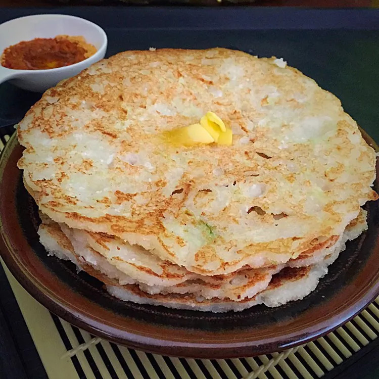

Cucumber Dosa

Normal Dosa but with cucumber and coconut, It can be eaten with chutney or butter
Prep Time: 30 mins
Cook Time: 5 mins
Additional Time: 10 mins
Ingredients:
- 1 cup grated cucumber
- 1 cup semolina flour
- half cup grated cocunut
- 1 teaspoon finely chopped green chile pepper
- half teaspoon finely chopped ginger
- salt to taste
Let's make the Batter
- Combine cucumber, semolina flour, coconut, rice flour, green chile, ginger, and salt in a bowl.
- Mix well.
- Add water and mix again
- let it rest for 30 to 45 minutes
Let's Cook the Batter
- Heat a pan over medium heat and brush with oil.
- Pour a ladleful of batter into the pan and spread it out gently and uniformly
- Cook dosa until golden brown on the bottom, about 1 minute
- Flip and cook until golden brown on the other side, about 1 minute more.
To Main Page